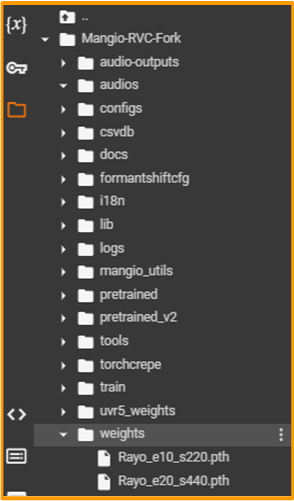

#
RVC Disconnected
Originally written by Angetyde
Re-done by Julia, Eddy, Poopmaster & Light
Last update: Jan 27, 2024
#
#
Introduction 📜
#
RVC Disconnected a port of RVC to Google Colab, for exclusively training.
Notebook made by Kit Lemonfoot.It's free, includes all the necesary tools for a quality model, the Tensorboard, & it's the fastest Colab space for training.
Making it the go-to method for training for cloud RVC users. Pretty much the only big downside is the time limit (but you can switch to another account & continue).
#
Pros & Cons
The pros & cons are subjective to the level of experience and needs of the user.
You might disagree with some of the points made.
#
#
How to Train 💾
#
Important notes:
• This guide is centered around the TensorBoard. Read it first if you haven't already.
• Turn on third-party cookies, or TB might not work.
#
#
1. Prepare the dataset
Outside of Colab, make a folder named after your model, & place your dataset inside it.
Don't include spaces/special characters.
Example:ArianaGrande2023and notAriana Grande 2023 >.< !.
Now zip the folder as a
.ZIPfolder.Not as .7ZIP or .RAR, as they aren't compatible with RVC Disconnected.

Reminder:
With modern versions of RVC, the dataset doesn't need to be split into various audios. One audio file is enough.
#
#
2. Set up the Colab space.
Head over to the Colab space.
Execute the
Dependenciescell. This process will take a moment
Click
Connect to Google Drive, select your Google account, & thenAllow.
Once it's done, in Google Drive go to the
rvcDisconnectedfolder.
Put the dataset's .ZIP inside said folder.
#
#
3. Set Training Variables.
Go to the
Set Training Variablescell.
Define
experiment_nameas your model's name.
Don't include spaces/special characters.Set
pretrain_typeasoriginalif you aren't familiar with it.Select
target_sample_rateas your dataset's sample rate.• If it's 44.1k, select
40k.
• If it's lower than 32k, select32k.
#
In
pitch_extraction_algorithmselect eitherRMVPE,CrepeorMangio-Crepe, according to your needs.
Don't use Harvest, as it's obsolete.Learn more here.
#
#
4. Set the enviroment.
Go to
Load Datasetcell.
In the
datasetbar type the name of the dataset's .ZIP, followed by its file extention (.zip). Then execute the cell.
Example:kalomaze.zip.Below it, execute
Preprocessing,Feature Extraction, &Save preprocessed dataset files to Google Drive.
#
#
5. Train Index.
Run
Index Trainingto create the .INDEX file.
To download it, open
rvcDisconnectedin your GD storage. Open the folder named after the model, select the .INDEX file, click the three dots &Download.
#
#
6. Set Training.
Go to the
Trainingcell.
In
Save frequencyyou determine at how many epochs the model will saved at.
If you are a newbie, leave it at15.- Think of it as how often RVC will make a "saving checkpoint" file of your model.
- They're useful to resume training starting from where you left. You'll learn more later.
- Example: with a value of
10, RVC will save the model at every 10 epochs (10, 20, 30, etc.)
In
total_epochsinput the total amount of epochs (training cycles) used for the training.Since we'll use a TensorBoard, using an arbitrarely large value like
2000is probably enough, to avoid re-training. Learn more here if you haven't already.
Leave
batch_sizeas8if you are a newbie.
If your dataset is short (around 2 minutes or less), use4instead.
#
#
7. Begin training.
Now begin training by running the Training cell.
Be patient, it may take hours.
TB will open up automatically. Remember to keep an eye on it.
While training, you might get disconnected if you:
• Ran out of usage time.
• Don't interact with the space for a long time (staying AFK).
• Get disconnected from your Internet.
• Don't solve the captchas that (might) pop up ocasionally.
#
#
8. Download model.
Once you detect overtraining, to stop training click the stop button of the
Trainingcell.Click the folder symbol on the right, open the
Mangio-RVC-Forkfolder, thenweights.
You'll find a list of each .PTH file of every epoch cycle/training step, with this format:modelname_epochnumber_stepnumber.pth.Right-click the right training point & press
Download.
And that's all. Have fun with your model.
Be sure to put the .PTH & .INDEX in a folder to keep it organized.
#
#
How to Re-Train 🔄
#
If the model still needs training, you can resume the training from a previous checkpoint instead of starting from scratch.
#
INSTRUCTIONS:
To do this, open the Colab space, input the exact same criteria as before & execute the cells like normal, EXCEPT
Preprocessing&Feature Extraction.
Execute the
Load preprocessed dataset filescell.
Go to
Import Model from Drive to Notebook. InSTEPCOUNTintroduce2333333& execute it.
And now you can resume training. Run the
Trainingcell, & rememeber to keep an eye on the TB.
Send any feedback here 👈